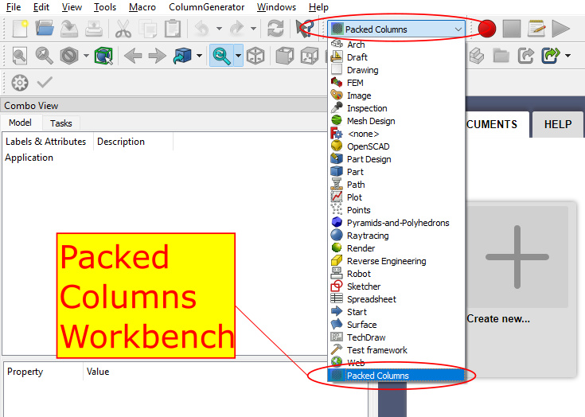
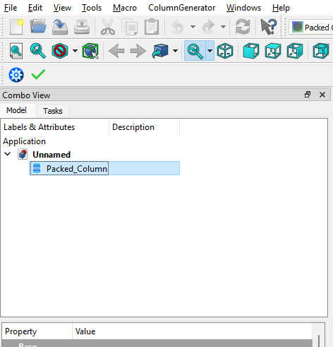
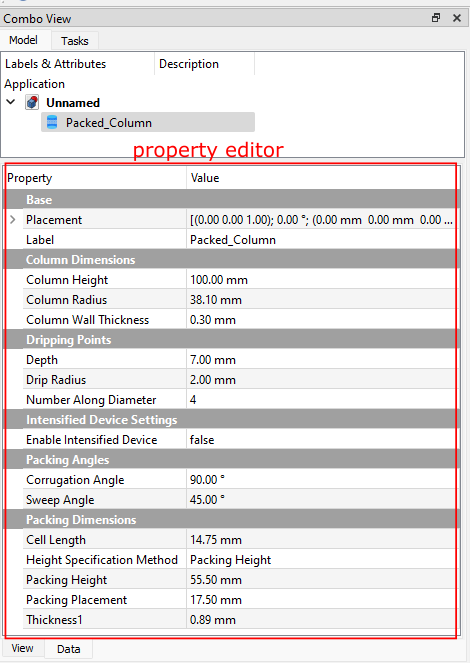
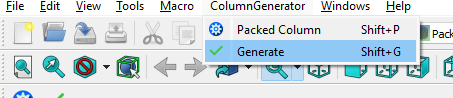
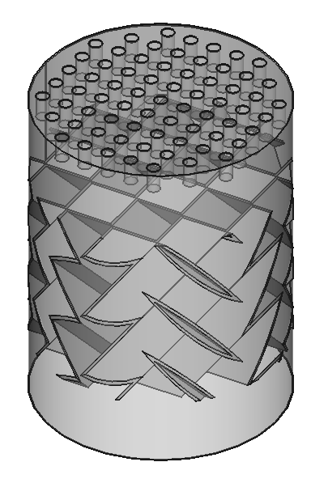
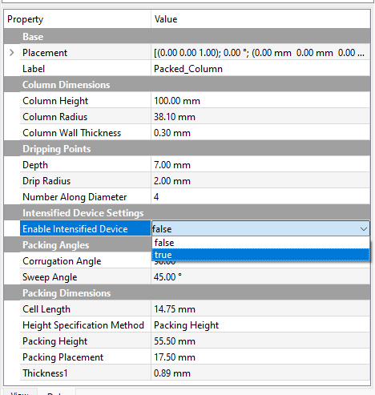

1. Create a new document File → New and select the Packed Columns Workbench as shown below.
Workbench figure
2. In the menu bar, select ColumnGenerator → Packed Column to create an instance of packed column.
Packed Column Selection
A Packed_Column object appears in the tree view.
Packed Column treeview
3. Select the packed column instance and review the column parameters in the property editor. Make any changes if needed.
Property editor
4. With the packed column selected, click on ColumnGenerator → Generate to generate the column.
Generate
5. This constructs the default column with default structured packing. For a detailed description of the column parameters refer to the Parameter Description section below.
Default Column
Example 2: Intensified structured packing
1. Repeat the steps 1-3 in Example 1. Select the Enable Intensified Device option as true. This populates two new parameters, Cooling Channel Width and Thickness2 in the Property editor. Review these parameters and make modifications if needed.
Intensified Settings
2. With the packed column selected, click on ColumnGenerator → Generate to generate the column.
Generate
3. This constructs the default column with the default intensified structured packing.